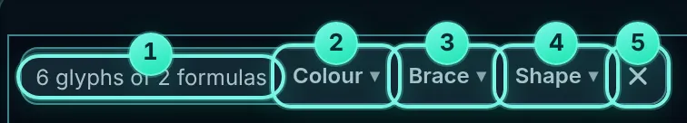
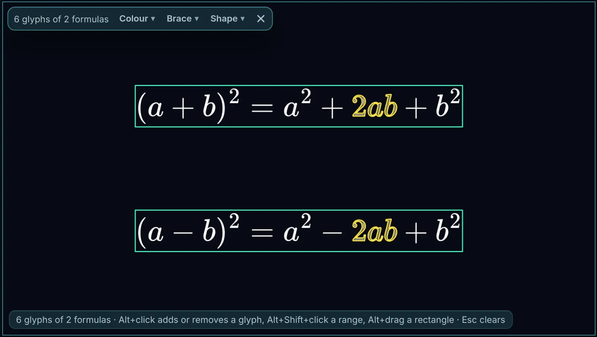
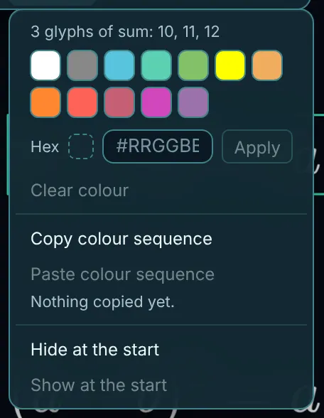
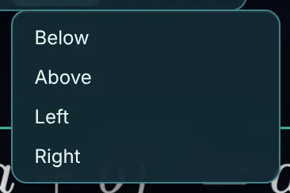
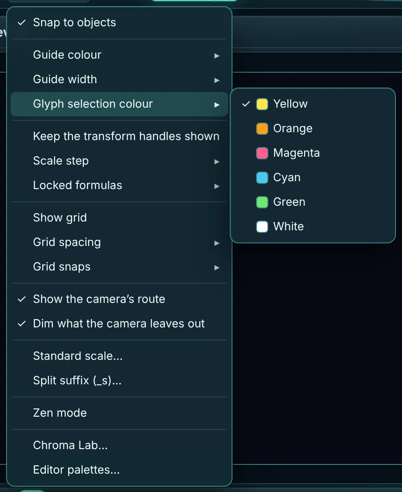
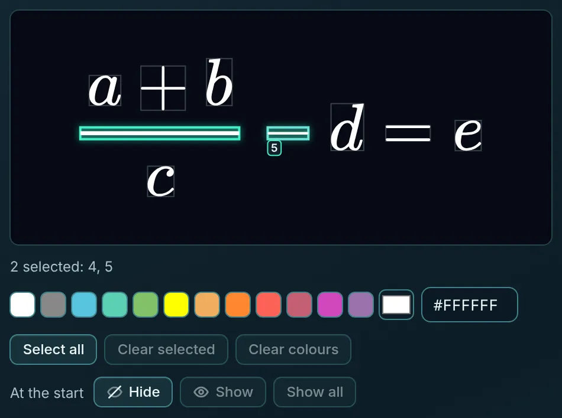

Picking glyphs with Alt
A formula is made of glyphs: the letters, the digits, the signs. Hold Alt in the Preview and click a glyph to pick it. Pick a few, in one formula or across several, and colour them, hide them, or put a brace or a shape on them.
Picking with Alt
In the Preview, hold Alt and:
- click a glyph to pick it, in yellow. Click a picked glyph again to take it out;
- Alt+Shift+click a glyph to pick a range: from the last glyph you picked in that formula to this one;
- drag from a formula to draw a rectangle that picks every glyph it touches, as it grows. With Shift held as you press, the glyphs are added to those already picked; Esc during the drag puts the previous pick back.
2 of 2ab; Alt+Shift+click on the
b picks the range; an Alt+drag from the formula picks what a rectangle
touches (here the a²), in place of the glyphs picked before.A click does not have to hit the glyph's ink: a glyph whose box is within about 6 pixels of
the pointer is picked, so a thin stroke or the gap of an = is not hard to aim at
(the circle selector goes further). A click on a formula but not on a
glyph clears the pick. Alt held before you press, on empty
space, pans the view instead.
The picked glyphs wear a faint yellow fill and a yellow outline, and so does the rectangle; the clip they belong to is selected. Their colour is a preference (below).
The bar
While glyphs are picked, a bar appears in the top-left corner of the Preview. It says what is picked and offers what can be done with it.

- For glyphs of one formula the bar names the formula and numbers the glyphs, up to twelve (“3 glyphs of sum: 10, 11, 12”); past twelve, or over several formulas, it only counts them. They are the numbers the glyph view shows when you point at a glyph.
- A right-click on the ink of a picked glyph opens the same actions as a
menu. In the hole of a letter, such as the middle of an
o, it opens the clip's menu instead. - Esc clears the pick, and so does selecting something else.
- The pick follows its formula when it is edited or rendered again: the picked glyphs keep their places in it, a glyph that is gone leaves the pick, and a pick that cannot be followed is cleared, with a notice.
The same gestures in the glyph view
The formula editor's glyph view picks glyphs in the same three ways, without Alt:
| To pick | In the Preview | In the glyph view |
|---|---|---|
| One glyph; again, take it out | Alt+click | click picks only that one; Ctrl+click toggles it |
| A range | Alt+Shift+click | Shift+click |
| What a rectangle touches | Alt+drag from a formula; Shift adds | drag over the drawing; Ctrl or Shift adds |
Across formulas
Pick a glyph of one formula and then Alt+click a glyph of another: it joins the pick. A rectangle takes the glyphs it touches in every formula it crosses. The bar then says, for instance, “6 glyphs of 2 formulas”, and the formulas that have picked glyphs are the selected clips for as long as the pick lasts. (A range is always within one formula.)

With glyphs of several formulas picked, the bar and the menu offer:
- a colour, or Clear colour, for all of them, as one undo step. The picked glyphs keep the selection colour until you clear the pick with Esc; then the colour shows, and Ctrl+Z takes it back;
- one brace or one shape over all of them. It is what
Brace(VGroup(…), RIGHT, …)is in Manim: fitted to the group when its clip starts, and it follows each of the formulas.
b², is
picked in both formulas, and Brace ▾ ▸ Right puts one brace to
their right, spanning both formulas. Deleting the clip of one of the formulas does not
delete the brace: it stays where it is, detached.Hiding at the start, the colour sequence and On some glyphs… are for the glyphs of one formula, so they are not there for a pick across several.
What picked glyphs are for
| Menu | What it does with the picked glyphs |
|---|---|
| Colour ▾ | A colour for them — from the Manim palette, from the roles of the active editor palette if there is one, or any #RRGGBB typed in the Hex field — or, with Clear colour, none of their own. The colour belongs to the formula, so it shows in every clip of it. Copy colour to clipboard (for a single glyph) puts its colour on the system clipboard; Copy colour sequence and Paste colour sequence carry the colours of a pick to another pick of the same symbols. Hide at the start and Show at the start, for the glyphs of one formula: hidden glyphs wait out of the picture when the formula appears, until an Appear block or a relation brings them in. |
| Brace ▾ | A brace on them: Below, Above, Left or Right; for one formula, On some glyphs… opens the dialog with them picked. |
| Shape ▾ | A shape on them: Box, Circle, Underline, Cross, Cross line or Highlight; again On some glyphs… for one formula. |
The clip's own right-click menu does the same when the glyphs are picked: its Add brace and Add shape entries say “on the selected glyphs”.


Colours, braces and shapes are described in Colouring glyphs and objects, Braces and Shapes. Two neighbouring tools pick glyphs with plain clicks instead of Alt: Align by symbol and the copying of colours glyph by glyph in order (Shift+C, described in Colouring glyphs and objects).
The selection colour
The colour of picked glyphs, and of the rectangle that picks them, is a preference: Preferences ▸ Glyph selection colour. It offers the same six colours as the snapping guides — Yellow, Orange, Magenta, Cyan, Green and White — and starts at yellow. It is separate from Guide colour: changing one does not move the other. The choice is kept in the browser.

Thin glyphs
A minus, a dot, the bar of a fraction: the thin symbols are the hardest to hit. Two aids make them reachable.
The circle selector in the Preview
Press S, or the second button of the view toolbar (Circle selector). The pointer becomes a dashed circle, and a click takes the symbol nearest to the pointer within the circle. A plain click takes its formula; Alt+click takes the symbol itself. Shift and the wheel change the reach, and S again gives the pointer back. The choice is kept. The two pair editors, the relation editor and the pair editor of a Morph block, always take glyphs with the same circle, at the same size.
The glyph view
The formula editor has a Glyphs view, which draws every glyph of the formula and lets you click, range-select (Shift), toggle (Ctrl) or drag a box over glyphs, to colour or hide them at the start. In it, every glyph has a frame that is at least 10 pixels each way, whatever the zoom, drawn under all the glyphs: the bar of a fraction and a minus sign take clicks, show their state — selected, hidden, coloured — and glow like a letter.

The Glyph list button beside the Glyphs title lists the glyphs under the drawing, each with its index and label; with the list shown you can pick glyphs from the keyboard. It stays off until you press it.
Try it
Open the start file: two identities, one under the other.